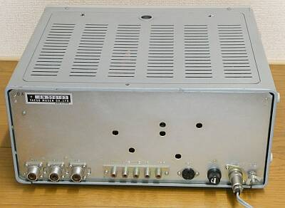
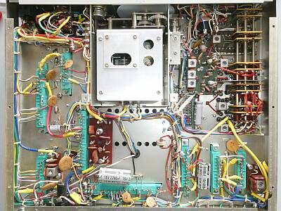
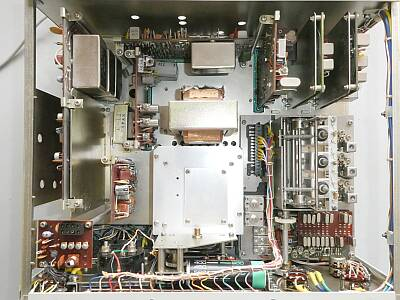
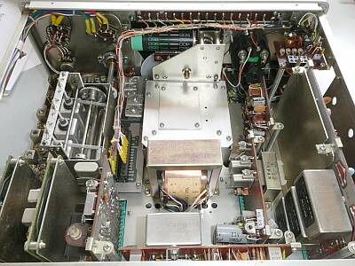
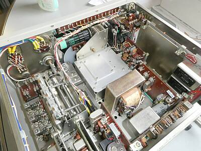
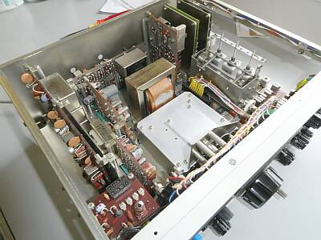
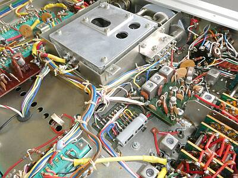
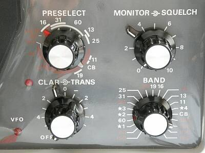
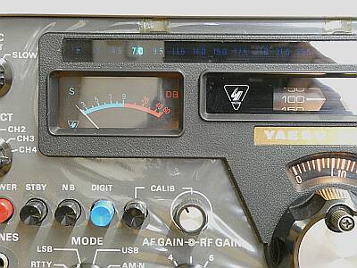

 |
こちらは、リアパネルの様子です
ＶＨＦコンバータ２つを内蔵しますので、ＡＮＴ接栓は3個すべて有効です
左から１４４MHｚ帯
５０ＭＨｚ帯
そして右端が、ＨＦ用接栓です
電源は、ＡＣケーブルが差し込まれています
シンプルなリアパネルです |
 |
こちらが、下（底面）の様子です
シールド板に囲われていてるところはＶＦＯ部
ユニット化により、ゆったりした配置に見えます
|
 |
シャーシ上面を撮したものです
右上にＶＨＦコンバータ基板が見えます
右端が１４４ＭＨｚ帯用
その左が、５０ＭＨｚ帯を２８ＭＨｚ帯に落とすコンバータです
その左は、ＡＦ／マーカーユニットで、その左にフィルタが見える基板はＦＭユニットです
ＲＦ同調は、１０１シリーズ共通のμ同調機構の採用です
結果、ゼネカバ受信と考えると少々使い勝手が悪い…後述します
|
 |
クリスタルフィルタについて
３つ重なって見えるもの
上から、ＳＳＢ用、ＡＭ用、一番下はＣＷ用です
下段中央に見えるものがＦＭ用です
ＦＭ受信にあっては、一般に４５５ＫＨｚにもう一段階変換して検波する例が多いですが、本機はＦＭも第２ＩＦ ３１８０ＫＨｚのまま検波です（FMユニットには、３１８０ＫＨｚのＦＭ用クリスタルフィルが装備されています） |
 |
シャーシ上面を角度を変えて撮したものです |
 |
シャーシ上面を角度を変えて撮したものです |
 |
さすが専用受信機
第一IFである、６０２０KHｚ～５５２０ＫＨｚについて、ＶＦＯダイヤルに連動した同調ＶＣを持つバンドパスフィルタを構成しています
ＶＦＯ右横に見えるＶＣがそのものです
その右に見えるのが第一ＩＦ基板（ここはベークライト製の基板ではない）
この動作を電子化した例
ＴＳ-９００ こちらのＶＣＴ（Voltage Controlled Tuning）と名がついた機能が同じ目的のものです |
 |
２１バンドを切替るバンドスイッチ
よくぞこんな多接点のＳＷを作ったと正直思います
赤字（読みずらい）がアマチュアバンドで白字がそれ以外
プリセレクタも赤字と白地に別れた指示をします
正直、使いづらい・・・です
ここでは、波長表示ですが、バンドＳＷに連動して表示するメインダイヤルの上部にある横長の表示板は、下段でご紹介のように周波数表示です |
 |
このメインダイヤル上部の表示板にあっては、周波数表示となっています |
|
本機は、初期モデルの後期（ボタンＳＷが四角から丸になった直後）ではないかと思います
が、非常に保存状態の良いものでした
スペックについても、ほぼ満足しています
ちょっと気になるのは、マーカー信号が弱い・・・・聞こえなくはありませんが
下段に性能をチェックした結果を記しますが、ＦＭに関しては、専用のものに比べると少々低感度です
通常、－１５～－２０ｄｂμVでＳＱは開きます |
|
| ＢＡＮＤ（ＭＨｚ） |
ＣＷ／ＳＳＢ
ＲＦ信号のＯＮ／ＯＦＦで
S/N１０ｄｂが得られる信号強度 |
ＡＭ
３０％変調のＯＮ／ＯＦＦで
S/N１０ｄｂが得られる信号強度 |
ＦＭ
ＳＱオープン時の
信号強度 |
| ３．６ |
０．２μV |
１．２μV |
|
| ７．１ |
０．２μV |
１．２μV |
|
| １４．１ |
０．２μV |
１．４μＶ |
|
| ２１．１ |
０．２μＶ |
１．０μＶ |
|
| ２８．６ |
０．２μＶ |
１．０μＶ |
|
| ５０．１ |
０．２μＶ |
|
－１０ｄｂμV |
| １４４．１ |
０．２５μＶ |
|
－１０ｄｂμV |
|